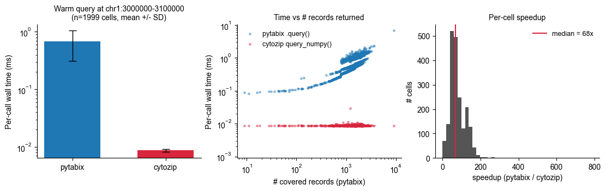
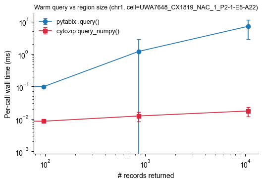

Benchmark: cytozip query vs pytabix
Compare in-process warm region queries between:
``cytozip.Reader.query_numpy()`` — decodes a chunk once (cached), then serves any sub-region out of an in-memory
np.ndarrayvianp.searchsorted.``pytabix.open().query()`` — a tabix index lookup on the original bgzipped ALLC file; every hit is materialized as a Python tuple.
Inputs are the 2000 paired cells under ~/Projects/test_cytozip/benchmark:
per-cell reference-aligned
.cz→benchmark/cz/<cell>.czper-cell original ALLC (for
pytabix) →benchmark/allc/<cell>.allc.tsv.gz(.tbi)genome-wide reference
.cz→~/Ref/hg38/hg38_with_chrL.allc.cz
Each cell is timed for both backends and the per-cell runtimes are written to benchmark/query_benchmark.log.tsv / query_benchmark.tsv (incrementally, so the run is resumable) and summarized as query_benchmark.txt + plots — modelled on benchmark_methylation_calling.ipynb.
The heavy work is parallelised across cells with a ``fork`` process pool. The ~2.6 GB reference chunk is decoded once in the parent (prime_reference) and inherited copy-on-write by every worker, so hundreds of workers stay within RAM.
[1]:
import os, sys, time, random, importlib
from pathlib import Path
import multiprocessing as mp
from concurrent.futures import ProcessPoolExecutor, as_completed
import numpy as np
import pandas as pd
import matplotlib as mpl
import matplotlib.pyplot as plt
mpl.rcParams['pdf.fonttype'] = 42
mpl.rcParams['font.family'] = 'Arial'
os.chdir(os.path.expanduser('~/Projects/test_cytozip'))
sys.path.insert(0, os.path.expanduser('~/Projects/Github/cytozip'))
import cytozip as czip
print('cytozip:', czip.__file__)
cytozip: /home/x-wding2/Projects/Github/cytozip/cytozip/__init__.py
Config
JOBS can be set high because the reference chunk is shared copy-on-write. Set N_CELLS smaller for a quick run; None uses every paired cell.
[2]:
BASE = Path('~/Projects/test_cytozip/benchmark').expanduser()
CZ_DIR = BASE / 'cz' # per-cell ref-aligned .cz
ALLC_DIR = BASE / 'allc' # per-cell ALLC (pytabix)
REF_CZ = Path('~/Ref/hg38/hg38_with_chrL.allc.cz').expanduser()
# ---- run parameters -----------------------------------------------------
N_CELLS = 2000 # None = ALL paired cells; an int randomly samples N
SEED = 0 # RNG seed so the random cell subset is reproducible
JOBS = 32 # workers (reference chunk is shared COW -> can go high)
NQ = 100 # warm repetitions per cell per backend
REGION = dict(chrom='chr1', start=3_000_000, end=3_100_000)
assert REF_CZ.exists(), f'reference .cz missing: {REF_CZ}'
all_cz = sorted(p.stem for p in CZ_DIR.glob('*.cz'))
paired = [c for c in all_cz if (ALLC_DIR / f'{c}.allc.tsv.gz').exists()]
if N_CELLS is not None and len(paired) > N_CELLS:
cells = sorted(random.Random(SEED).sample(paired, N_CELLS))
else:
cells = paired
region_str = f"{REGION['chrom']}:{REGION['start']}-{REGION['end']}"
print(f'{len(paired)} paired cells; benchmarking {len(cells)} '
f'(SEED={SEED}, JOBS={JOBS}, NQ={NQ})')
print('region:', region_str)
2000 paired cells; benchmarking 2000 (SEED=0, JOBS=32, NQ=100)
region: chr1:3000000-3100000
Run the parallel benchmark
Per-cell metrics are appended to query_benchmark.log.tsv the moment each cell finishes, so re-running the cell resumes where it left off (already-logged cells are skipped). Only the parent process writes the log — workers just compute and return their row.
[3]:
# query_bench.py lives next to this notebook; add that dir to sys.path since
# an earlier cell chdir'd into ~/Projects/test_cytozip.
sys.path.insert(0, os.path.expanduser('~/Projects/Github/cytozip/notebooks/benchmark'))
import query_bench as qb
importlib.reload(qb)
qb.configure(REF_CZ, CZ_DIR, ALLC_DIR,
REGION['chrom'], REGION['start'], REGION['end'], nq=NQ)
LOG_TSV = BASE / 'query_benchmark.log.tsv'
COLS = ['cell', 'ok', 'cz_n', 'tabix_n', 'cz_ms', 'tabix_ms', 'speedup']
def _load_done():
if LOG_TSV.exists() and LOG_TSV.stat().st_size > 0:
d = pd.read_csv(LOG_TSV, sep='\t')
return set(d['cell'].astype(str))
return set()
done = _load_done()
todo = [c for c in cells if c not in done]
print(f'{len(cells)} target cells, {len(done)} already logged, {len(todo)} to run')
if todo:
qb.prime_reference() # decode reference chunk once (parent)
ctx = mp.get_context('fork') # workers inherit the primed chunk COW
header_needed = not (LOG_TSV.exists() and LOG_TSV.stat().st_size > 0)
t0 = time.perf_counter()
with open(LOG_TSV, 'a') as f, \
ProcessPoolExecutor(max_workers=JOBS, mp_context=ctx) as ex:
if header_needed:
f.write('\t'.join(COLS) + '\n'); f.flush()
futs = {ex.submit(qb.bench_cell, c): c for c in todo}
n_fail = 0
for i, fut in enumerate(as_completed(futs), 1):
r = fut.result()
f.write('\t'.join(str(r.get(k, '')) for k in COLS) + '\n'); f.flush()
if not r['ok']:
n_fail += 1
if n_fail <= 5:
print('FAIL', r['cell'], '\n', r['err'])
if i % 200 == 0 or i == len(todo):
print(f' {i:>5}/{len(todo)} {r["cell"]:<38} '
f'cz={r["cz_ms"]:.4f}ms tabix={r["tabix_ms"]:.4f}ms',
flush=True)
print(f'done in {time.perf_counter() - t0:.1f}s (failures={n_fail})')
else:
print('nothing to run; all target cells already logged.')
2000 target cells, 0 already logged, 2000 to run
200/2000 UWA7648_CX1819_NAC_1_P10-1-K18-I10 cz=0.0088ms tabix=0.4687ms
400/2000 UWA7648_CX1819_NAC_1_P12-1-E22-A21 cz=0.0086ms tabix=1.1217ms
FAIL UWA7648_CX1819_NAC_1_P13-1-I24-J21
Traceback (most recent call last):
File "/home/x-wding2/Projects/Github/cytozip/notebooks/benchmark/query_bench.py", line 98, in bench_cell
tb_n = sum(1 for _ in tb.query(CHROM, START, END))
tabix.TabixError: query failed
600/2000 UWA7648_CX1819_NAC_1_P13-1-I24-L24 cz=0.0087ms tabix=0.4903ms
800/2000 UWA7648_CX1819_NAC_1_P15-1-L3-I14 cz=0.0086ms tabix=0.5476ms
1000/2000 UWA7648_CX1819_NAC_1_P2-1-E5-A21 cz=0.0087ms tabix=0.7692ms
1200/2000 UWA7648_CX1819_NAC_1_P3-1-O5-I6 cz=0.0086ms tabix=0.4850ms
1400/2000 UWA7648_CX1819_NAC_1_P5-1-K9-D22 cz=0.0086ms tabix=0.2645ms
1600/2000 UWA7648_CX1819_NAC_1_P6-1-M9-O2 cz=0.0086ms tabix=0.3719ms
1800/2000 UWA7648_CX1819_NAC_1_P8-1-I15-I19 cz=0.0086ms tabix=0.2297ms
2000/2000 UWA7648_CX1819_NAC_1_P9-1-M14-P7 cz=0.0086ms tabix=0.3577ms
done in 54.9s (failures=1)
[4]:
# Consolidated, de-duplicated per-cell table (successful cells only).
raw = pd.read_csv(LOG_TSV, sep='\t').drop_duplicates('cell', keep='last')
df = raw[raw['ok'].astype(str) == 'True'].reset_index(drop=True)
# restrict to the target subset for this run
df = df[df['cell'].isin(cells)].reset_index(drop=True)
TSV = BASE / 'query_benchmark.tsv'
df.to_csv(TSV, sep='\t', index=False, float_format='%.6f')
print('wrote', TSV, ' n =', len(df))
display(df.head())
print(df[['cz_n', 'tabix_n', 'cz_ms', 'tabix_ms', 'speedup']].describe().round(4))
wrote /home/x-wding2/Projects/test_cytozip/benchmark/query_benchmark.tsv n = 1999
| cell | ok | cz_n | tabix_n | cz_ms | tabix_ms | speedup | |
|---|---|---|---|---|---|---|---|
| 0 | UWA7648_CX1819_NAC_1_P1-1-I3-B16 | True | 56601 | 0 | 0.008972 | 0.001582 | 0.176307 |
| 1 | UWA7648_CX1819_NAC_1_P1-1-I3-A1 | True | 56601 | 1748 | 0.008962 | 0.595760 | 66.477110 |
| 2 | UWA7648_CX1819_NAC_1_P1-1-I3-A11 | True | 56601 | 1579 | 0.009023 | 0.668766 | 74.122014 |
| 3 | UWA7648_CX1819_NAC_1_P1-1-I3-A12 | True | 56601 | 1346 | 0.008847 | 0.467506 | 52.844201 |
| 4 | UWA7648_CX1819_NAC_1_P1-1-I3-A6 | True | 56601 | 72 | 0.008780 | 0.096992 | 11.046450 |
cz_n tabix_n cz_ms tabix_ms speedup
count 1999.0 1999.0000 1999.0000 1999.0000 1999.0000
mean 56601.0 1393.7214 0.0087 0.6841 78.6879
std 0.0 526.8811 0.0005 0.3694 42.5145
min 56601.0 0.0000 0.0084 0.0014 0.1593
25% 56601.0 1094.0000 0.0086 0.4508 51.8149
50% 56601.0 1403.0000 0.0086 0.5894 67.6277
75% 56601.0 1696.0000 0.0087 0.8906 102.3872
max 56601.0 9091.0000 0.0297 6.7720 785.8038
Aggregate summary → text file
[5]:
mean_cz, mean_tb = df['cz_ms'].mean(), df['tabix_ms'].mean()
med_cz, med_tb = df['cz_ms'].median(), df['tabix_ms'].median()
tot_cz, tot_tb = df['cz_ms'].sum(), df['tabix_ms'].sum()
txt = BASE / 'query_benchmark.txt'
txt.write_text(
"cytozip Reader.query_numpy() vs pytabix .query()\n"
"==================================================\n"
f"reference .cz : {REF_CZ}\n"
f"region : {region_str}\n"
f"cells : {len(df)}\n"
f"warm reps (NQ): {NQ}\n"
"\n"
f"pytabix : mean={mean_tb*1e3:9.2f} us/call median={med_tb*1e3:9.2f} us "
f"sum={tot_tb:9.2f} ms\n"
f"cytozip : mean={mean_cz*1e3:9.2f} us/call median={med_cz*1e3:9.2f} us "
f"sum={tot_cz:9.2f} ms\n"
"\n"
f"speedup (pytabix / cytozip, mean per-call) = "
f"{mean_tb / max(mean_cz, 1e-12):6.1f}x\n"
f"speedup (median) = "
f"{med_tb / max(med_cz, 1e-12):6.1f}x\n"
)
print(txt.read_text())
cytozip Reader.query_numpy() vs pytabix .query()
==================================================
reference .cz : /home/x-wding2/Ref/hg38/hg38_with_chrL.allc.cz
region : chr1:3000000-3100000
cells : 1999
warm reps (NQ): 100
pytabix : mean= 684.12 us/call median= 589.45 us sum= 1367.56 ms
cytozip : mean= 8.70 us/call median= 8.64 us sum= 17.40 ms
speedup (pytabix / cytozip, mean per-call) = 78.6x
speedup (median) = 68.2x
Plots
Note: with a reference=, query_numpy returns every reference cytosine in the window (cz_n, constant across cells), while pytabix returns only covered rows (tabix_n, varies per cell). Timings are plotted against tabix_n.
[6]:
c_tb, c_qn = '#1f77b4', '#d7263d'
fig, axes = plt.subplots(1, 3, figsize=(11, 3.4), constrained_layout=True)
# (1) mean +/- SD per-call time
ax = axes[0]
means = [df['tabix_ms'].mean(), df['cz_ms'].mean()]
sds = [df['tabix_ms'].std(), df['cz_ms'].std()]
ax.bar([0, 1], means, yerr=sds, capsize=5, color=[c_tb, c_qn], width=0.6,
error_kw=dict(ecolor='black', lw=1))
ax.set_xticks([0, 1]); ax.set_xticklabels(['pytabix', 'cytozip'])
ax.set_ylabel('Per-call wall time (ms)')
ax.set_yscale('log')
ax.set_title(f'Warm query at {region_str}\n(n={len(df)} cells, mean +/- SD)',
fontsize=10)
# (2) time vs # covered records
ax = axes[1]
ax.scatter(df['tabix_n'], df['tabix_ms'], s=6, alpha=0.4, color=c_tb,
label='pytabix .query()')
ax.scatter(df['tabix_n'], df['cz_ms'], s=6, alpha=0.4, color=c_qn,
label='cytozip query_numpy()')
ax.set_xscale('log'); ax.set_yscale('log')
ax.set_xlabel('# covered records (pytabix)')
ax.set_ylabel('Per-call wall time (ms)')
ax.set_title('Time vs # records returned', fontsize=10)
ax.legend(frameon=False, fontsize=9)
# (3) speedup distribution
ax = axes[2]
sp = df['speedup'].replace([np.inf, -np.inf], np.nan).dropna()
ax.hist(sp, bins=40, color='#555555')
ax.axvline(sp.median(), color=c_qn, lw=1.5,
label=f'median = {sp.median():.0f}x')
ax.set_xlabel('speedup (pytabix / cytozip)')
ax.set_ylabel('# cells')
ax.set_title('Per-cell speedup', fontsize=10)
ax.legend(frameon=False, fontsize=9)
for ax in axes:
for s in ('top', 'right'):
ax.spines[s].set_visible(False)
fig.savefig(BASE / 'query_benchmark.pdf', bbox_inches='tight')
fig.savefig(BASE / 'query_benchmark.png', dpi=150, bbox_inches='tight')
plt.show()

Correctness check on a random subset
Compare the values returned by both backends on a sample of cells. Expected differences accounted for: truncated_ge256 (uint8 saturation) and only_in_cz_zero (reference cytosines with no coverage). mismatched and only_in_cz_covered should be 0.
[7]:
N_CHECK = 50
check_cells = sorted(random.Random(SEED).sample(cells, min(N_CHECK, len(cells))))
ref_reader = czip.Reader(str(REF_CZ))
import tabix as pytabix
rows = []
for cid in check_cells:
r = czip.Reader(str(CZ_DIR / f'{cid}.cz'))
t = pytabix.open(str(ALLC_DIR / f'{cid}.allc.tsv.gz'))
pos, recs = r.query_numpy(chunk_key=REGION['chrom'],
start=REGION['start'], end=REGION['end'],
reference=ref_reader)
mc_f, cov_f = recs.dtype.names[:2]
cz_map = {int(p): (int(rec[mc_f]), int(rec[cov_f])) for p, rec in zip(pos, recs)}
# pytabix is 0-based half-open; query_numpy is 1-based inclusive -> start-1
tb_map = {int(x[1]): (int(x[4]), int(x[5]))
for x in t.query(REGION['chrom'], REGION['start'] - 1, REGION['end'])}
truncated = mismatched = 0
for p, (mc_a, cov_a) in tb_map.items():
v = cz_map.get(p)
if v is None:
mismatched += 1
elif v == (min(mc_a, 255), min(cov_a, 255)):
if mc_a >= 256 or cov_a >= 256:
truncated += 1
else:
mismatched += 1
only_cov = sum(1 for p, v in cz_map.items() if p not in tb_map and v != (0, 0))
only_zero = sum(1 for p, v in cz_map.items() if p not in tb_map and v == (0, 0))
rows.append(dict(cell=cid, pytabix_n=len(tb_map), cz_n=len(cz_map),
truncated_ge256=truncated, mismatched=mismatched,
only_in_cz_covered=only_cov, only_in_cz_zero=only_zero))
r.close()
ref_reader.close()
corr = pd.DataFrame(rows)
corr.to_csv(BASE / 'query_correctness.tsv', sep='\t', index=False)
print(f"checked {len(corr)} cells: "
f"truncated(>=256)={corr['truncated_ge256'].sum()} "
f"mismatched={corr['mismatched'].sum()} "
f"only_in_cz_covered={corr['only_in_cz_covered'].sum()} "
f"only_in_cz_zero={corr['only_in_cz_zero'].sum()}")
assert corr['mismatched'].sum() == 0 and corr['only_in_cz_covered'].sum() == 0, \
'unexpected mismatch!'
print('OK: values agree (up to uint8 truncation and zero-coverage sites).')
display(corr.head())
checked 50 cells: truncated(>=256)=0 mismatched=0 only_in_cz_covered=0 only_in_cz_zero=2764733
OK: values agree (up to uint8 truncation and zero-coverage sites).
| cell | pytabix_n | cz_n | truncated_ge256 | mismatched | only_in_cz_covered | only_in_cz_zero | |
|---|---|---|---|---|---|---|---|
| 0 | UWA7648_CX1819_NAC_1_P1-1-I3-J17 | 2233 | 56601 | 0 | 0 | 0 | 54368 |
| 1 | UWA7648_CX1819_NAC_1_P10-1-K18-A24 | 1313 | 56601 | 0 | 0 | 0 | 55288 |
| 2 | UWA7648_CX1819_NAC_1_P10-1-K18-H20 | 1422 | 56601 | 0 | 0 | 0 | 55179 |
| 3 | UWA7648_CX1819_NAC_1_P10-1-K18-I2 | 1676 | 56601 | 0 | 0 | 0 | 54925 |
| 4 | UWA7648_CX1819_NAC_1_P10-1-K18-J1 | 1444 | 56601 | 0 | 0 | 0 | 55157 |
Region-size scaling (single representative cell)
Complements the fixed-region result above: on one cell, grow the window and watch pytabix per-call time scale ~linearly with the number of records returned while query_numpy stays roughly flat.
[8]:
cell = cells[len(cells) // 2]
r = czip.Reader(str(CZ_DIR / f'{cell}.cz'))
t = pytabix.open(str(ALLC_DIR / f'{cell}.allc.tsv.gz'))
ref_reader = czip.Reader(str(REF_CZ))
chrom, center = 'chr1', 50_000_000
half_widths = [2_500, 25_000, 250_000, 2_500_000, 25_000_000]
N_REP = 5
# prime once on the largest window
mw = max(half_widths)
r.query_numpy(chunk_key=chrom, start=center - mw, end=center + mw, reference=ref_reader)
def _wt(fn, n):
t0 = time.perf_counter()
for _ in range(n):
fn()
return (time.perf_counter() - t0) / n
scale_rows = []
for hw in half_widths:
s, e = center - hw, center + hw
n_rec = sum(1 for _ in t.query(chrom, s, e))
n_rep = 100 if hw <= 250_000 else (20 if hw <= 2_500_000 else 5)
for rep in range(N_REP):
t_tb = _wt(lambda s=s, e=e: list(t.query(chrom, s, e)), n_rep)
t_qn = _wt(lambda s=s, e=e: r.query_numpy(
chunk_key=chrom, start=s, end=e, reference=ref_reader), n_rep)
scale_rows.append(dict(size_bp=e - s, n_records=n_rec, replicate=rep,
pytabix_ms=t_tb * 1e3, qnumpy_ms=t_qn * 1e3))
print(f'size={e-s:>10} bp N={n_rec:>7} '
f'pytabix={np.mean([x["pytabix_ms"] for x in scale_rows if x["size_bp"]==e-s]):8.3f} ms '
f'qnumpy={np.mean([x["qnumpy_ms"] for x in scale_rows if x["size_bp"]==e-s]):8.4f} ms')
r.close(); ref_reader.close()
scale = pd.DataFrame(scale_rows)
scale.to_csv(BASE / 'query_scale_benchmark.tsv', sep='\t', index=False)
agg = (scale.groupby(['size_bp', 'n_records'], as_index=False)
.agg(pytabix_mean=('pytabix_ms', 'mean'), pytabix_std=('pytabix_ms', 'std'),
qnumpy_mean=('qnumpy_ms', 'mean'), qnumpy_std=('qnumpy_ms', 'std'))
.sort_values('size_bp'))
fig, ax = plt.subplots(figsize=(5.2, 3.6), constrained_layout=True)
ax.errorbar(agg['n_records'], agg['pytabix_mean'], yerr=agg['pytabix_std'],
marker='o', color=c_tb, capsize=3, lw=1.2, label='pytabix .query()')
ax.errorbar(agg['n_records'], agg['qnumpy_mean'], yerr=agg['qnumpy_std'],
marker='s', color=c_qn, capsize=3, lw=1.2, label='cytozip query_numpy()')
ax.set_xscale('log'); ax.set_yscale('log')
ax.set_xlabel('# records returned'); ax.set_ylabel('Per-call wall time (ms)')
ax.set_title(f'Warm query vs region size ({chrom}, cell={cell})', fontsize=9)
ax.legend(frameon=False, fontsize=9)
for sp in ('top', 'right'):
ax.spines[sp].set_visible(False)
fig.savefig(BASE / 'query_scale_benchmark.pdf', bbox_inches='tight')
plt.show()
size= 5000 bp N= 0 pytabix= 0.001 ms qnumpy= 0.0087 ms
size= 50000 bp N= 0 pytabix= 0.001 ms qnumpy= 0.0091 ms
size= 500000 bp N= 97 pytabix= 0.099 ms qnumpy= 0.0085 ms
size= 5000000 bp N= 865 pytabix= 1.207 ms qnumpy= 0.0123 ms
size= 50000000 bp N= 10710 pytabix= 7.162 ms qnumpy= 0.0175 ms
